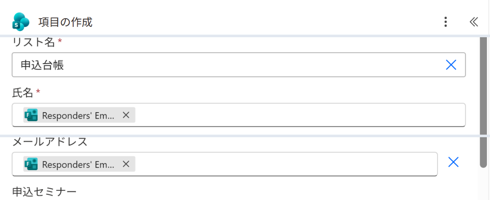
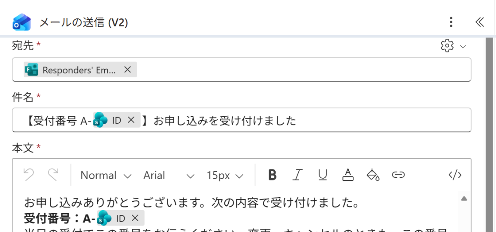

Vol.146-4
要の設定は件名と本文の ID
メールの件名と本文に、項目の作成の出力 ID を差し込みます。
台帳の行と受付番号が同じなので、問い合わせが来たら ID で1行に絞れます
台帳の行と受付番号が同じなので、問い合わせが来たら ID で1行に絞れます

A
B
A
リスト名は申込台帳。列は氏名・メールアドレス・申込セミナー
B
メールアドレスは Responders' Email を選ぶ

C
D
C
件名の ID は「項目の作成」の動的コンテンツ
D
本文にも同じ ID。受付で番号を言ってもらう
キャンセルの連絡も受付番号で受けると、台帳のどの行かすぐ分かる
出典：Microsoft Learn